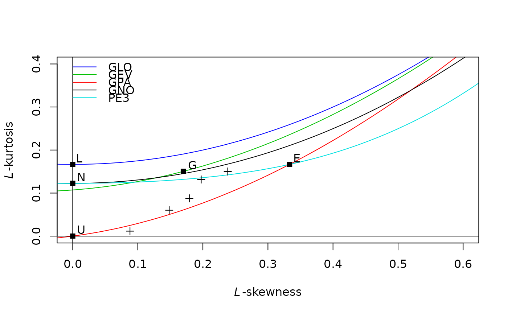
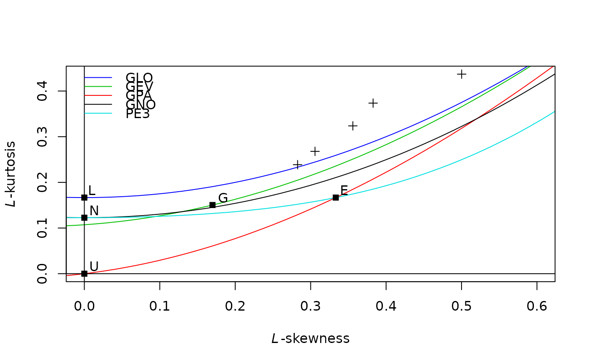

qua: probability distribution fitting with L-Momentsannual.agg.qua.RdMirror of qua: probability distribution fitting with L-Moments
annual.agg.qua(
f = (0:10)/10,
para,
f.name = "f",
rt.name = "rt",
aggr.name = NA,
dd.name = NA,
use_ggplot = TRUE,
xlab = "duration",
ylab = "value",
fill = c("#ca0020", "#0571b0", "#bababa", "#bababb", "#bababc"),
color_idf = brewer.pal(name = "YlOrRd", n = length(f)),
nrun = 5,
n_idf = NULL,
remove_distrib_from_boxplot = FALSE,
idf_curve = TRUE,
idf_curve_rt = idf_curve,
possible_return_null = FALSE,
...
)
yearly.agg.qua(...)vector of probabilities/frequencies.
object returned by annual.agg.pel.
column names for the probabilities/frequencies and corresponding return periods. Default are "f" and "rt" respectively.
column names. see annual.agg.samlmu or annual.agg.pel.
logical. if it is TRUE (default) boxplots are created. See function result descriptions.
arguments for ggplot2 functions. It is used if use_ggplot==TRUE. See geom_boxplot,scale_fill_manual,labs
additional Monte-Carlo generations. It is used if use_ggplot==TRUE.
exponents (e.g. generally named n) of Intensity Duration Curve
logical. It is used if use_ggplot==TRUE. Default see usage. If it TRUE distribution quantiles are removed from box plots.
logical. It is used if use_ggplot==TRUE. Default see usage. If one of them is TRUE. IDF (intensity-duration-frequancy) and DDF (depth-duration-frequency) curves are added to the respective boxplots.
logical. Default is FALSE , otherwise it returns NULL with no errors if f or para are NULL or zero-length.
further arguments.
library(RMAWGEN)
data(trentino)
time <- as.Date(sprintf("%04d-%02d-%02d",PRECIPITATION$year,
PRECIPITATION$month,PRECIPITATION$day),format="%Y-%m-%d")
x <- PRECIPITATION$B8570
y <- annual.agg(x,dd=1:5,time)
lmom <- annual.agg.samlmu(y)
lmrd(lmom)

z <- annual.agg.pel(distrib="gpa",x=y,lmom=lmom)
#> Warning: ties should not be present for the one-sample Kolmogorov-Smirnov test
#> Warning: ties should not be present for the one-sample Kolmogorov-Smirnov test
#> Warning: ties should not be present for the one-sample Kolmogorov-Smirnov test
out <- annual.agg.qua(para=z)
#> Warning: n too large, allowed maximum for palette YlOrRd is 9
#> Returning the palette you asked for with that many colors
# \donttest{
library(GSODR)
library(magrittr)
library(data.table)
#>
#> Attaching package: ‘data.table’
#> The following objects are masked from ‘package:dplyr’:
#>
#> between, first, last
#> The following objects are masked from ‘package:zoo’:
#>
#> yearmon, yearqtr
#> The following objects are masked from ‘package:lubridate’:
#>
#> hour, isoweek, mday, minute, month, quarter, second, wday, week,
#> yday, year
library(dplyr)
set.seed(123)
years <- 1937:2020
gsod <- get_GSOD(years=years,station="623180-99999") ##ALEXANDRIA INTL EG 623180-99999
prec <- gsod %>% select(YEARMODA,PRCP,PRCP_ATTRIBUTES) %>%
mutate(YEARMODA=as.Date(YEARMODA,format="%Y-%m-%d"))
dds <- range(prec$YEARMODA)
## See GSODR documentation
yymmdds <- seq(from=dds[1],to=dds[2],by="day")
prec <- data.table::data.table(YEARMODA=yymmdds) %>% full_join(prec)
#> Joining with `by = join_by(YEARMODA)`
y <- annual.agg(x=prec$PRCP,dd=1:5,time=prec$YEARMODA)
#> Warning: There were 30 warnings in `summarize()`.
#> The first warning was:
#> ℹ In argument: `aggr = aggr.fun(.data$value, na.rm = na.rm)`.
#> ℹ In group 11: `dd = D001` and `index = "1967"`.
#> Caused by warning in `aggr.fun()`:
#> ! no non-missing arguments to max; returning -Inf
#> ℹ Run dplyr::last_dplyr_warnings() to see the 29 remaining warnings.
### y$aggr cannot be -Inf or +Inf
y$aggr[y$aggr==-Inf] <- NA
lmom <- annual.agg.samlmu(y)
lmrd(lmom)

z <- annual.agg.pel(distrib="gev",x=y,lmom=lmom)
#> Warning: ties should not be present for the one-sample Kolmogorov-Smirnov test
#> Warning: ties should not be present for the one-sample Kolmogorov-Smirnov test
#> Warning: ties should not be present for the one-sample Kolmogorov-Smirnov test
#> Warning: ties should not be present for the one-sample Kolmogorov-Smirnov test
#> Warning: ties should not be present for the one-sample Kolmogorov-Smirnov test
out <- annual.agg.qua(f=c(1:49)/50,para=z)
#> Warning: n too large, allowed maximum for palette YlOrRd is 9
#> Returning the palette you asked for with that many colors
# }